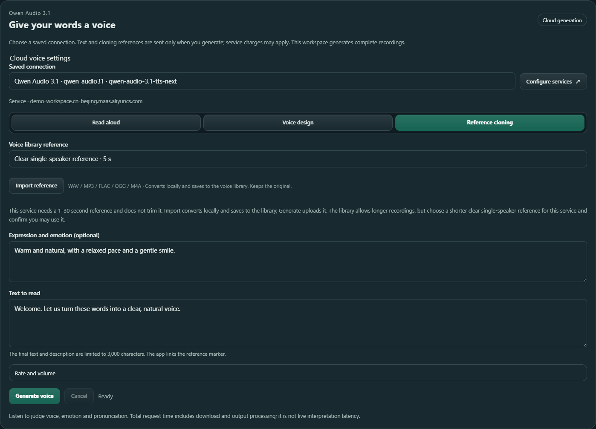
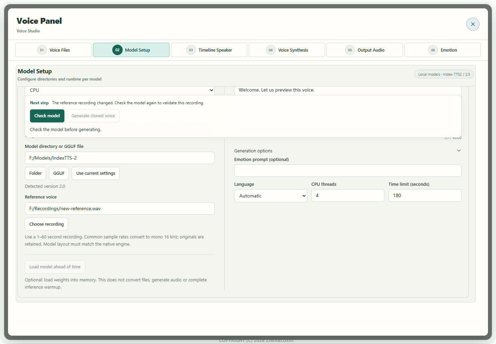

Scenario guide
Clone a voice from a recording
Check the model and reference, then audition a short generated passage.
What you will get
Keep the original recording, generate new content and save a take as a reusable reference.
Before you start
- Use a clear single-speaker reference. Most native routes require 1–60 seconds, preferably 3–10; FireRed requires 1–10.24 seconds, preferably 3–5. Qwen Base, FireRed and other routes need the actual transcript.
- Choose a matching native Index-TTS2/2.5, VoxCPM2 or Qwen3-TTS Base package, a complete original FireRed Instruct folder, or a running compatible cloning server. Do not mix assets from different models.
- Local CPU generation may be slow. NVIDIA GPU execution needs matching CUDA components. Verify with inspection and an actual short audition rather than assuming memory is sufficient from the model name.
Clone with Qwen cloud audio
Use Qwen Audio 3.1 when you want to generate without loading a voice model locally. Your cloud account needs access to the model. Generate sends the text and reference recording to the service, which may charge for the request. This route produces a complete recording and supports one reference at a time.
- 01
Save the connection in Setup Wizard
Open the API services step in Setup Wizard and search for Qwen Audio 3.1. Enable it, enter your workspace HTTPS root and API key, then enter
qwen-audio-3.1-tts-nextin the speech synthesis model field and save. The root format ishttps://{WorkspaceId}.cn-beijing.maas.aliyuncs.com. Replace the bracketed part with your actual WorkspaceId; do not append an API path, port or/v1. Recognition and synthesis models have separate fields, so keep your existing recognition model.
Actual app interface with illustrative workspace and reference; no cloud service was called. Click to enlarge. - 1Enter your actual workspace root, without an API path.
- 2Enter your own API key; the screenshot uses a local example.
- 3Enter qwen-audio-3.1-tts-next in TTS; the ASR field remains separate.
- 02
Choose the saved connection and reference
Open Voice Tools → Model Setup → Cloud API, choose Qwen Audio 3.1, then select the connection under Saved connection. Select Reference cloning and choose an active reference from the voice library. Use Import reference if you need to add a recording. Import converts and saves locally, retains the original and does not upload it.
This service needs a clear single-speaker reference lasting 1–30 seconds; start with 3–10 seconds. The library can hold longer recordings, but a recording over 30 seconds cannot be used here. Choose a suitable shorter recording; the app does not trim it automatically. Confirm you may use the voice.

Actual app interface with illustrative workspace and reference; no cloud service was called. Click to enlarge. - 1Choose the saved connection and select Reference cloning.
- 2Choose an active 1–30 second single-speaker reference.
- 3Import converts and saves locally; it does not upload the reference.
- 4Expression and emotion are optional; describe them in ordinary words.
- 5Enter the new spoken words, without @voice markers.
- 6Generate sends the text and reference; listen and download after completion.
- 03
Enter the new words and optional expression
Enter the new words under Text to read. Leave Expression and emotion blank or describe a calm, natural delivery with a relaxed pace. The final text and description are limited to 3,000 characters. Use ordinary text and line breaks, without
@voice1or other reference markers; the app links the chosen reference. Expand Rate and volume if needed, then test with a short passage. - 04
Generate, listen and download
Select Generate voice to send the text and reference. When it finishes, listen to check the voice, pronunciation and expression, then Download WAV or keep the take in A/B for comparison. After Cancel, wait for settlement before changing the connection or reference. This route produces complete recordings, does not feed continuous live interpretation and does not create a reusable supplier voice ID.

Qwen cloud audio: which connection generated this recording?
The source labels described here are provided in the next update. The current Windows r475 installer does not include this improvement.
In Voice Tools → Model Setup → Cloud API → Qwen Audio 3.1 · TTS, choose a connection saved in Setup. The service shown at the top is used for the next generation. After generation, Source of this audio shows the original connection, service host and model used for that recording.
If the saved connection changes, an existing result can show From previous settings. That audio still belongs to the source recorded in the result. You can continue listening, download its WAV, or keep it in A/B; each comparison take retains its own source. A new generation uses the current saved connection.

- 1The connection shown above is used for the next generation.
- 2The result records its original service and model; From previous settings keeps that origin explicit.
- 3Continue listening or download this audio. Save needed recordings before changing settings or reloading.
Earlier versions kept playback and A/B copies in the current interface session, so recordings needed downloading before a reload. Updates with the restoration workflow below can recover locally saved audio after this window reloads. Download recordings you need to keep long term.
If the saved service or credentials are unavailable or a connection-change message appears, check and save the connection again in Setup, then reselect it. Wait for cancellation to finish before changing the service. Judge voice and expression by listening; a successful request does not establish cloning accuracy or live-interpretation latency.
Continue listening after finishing Setup
This workflow requires the r480 or later Windows candidate installer. The r475 installer does not include these improvements.
- After a successful Qwen Audio 3.1 audition, wait for local saving to finish. For comparison, keep a result as A or B; shared A/B accepts local-model, model-service and cloud results, including MP3. Setup will not reload the interface while an audition cache write is pending.
- Finish and save Setup in the same application window. After the interface reloads, reopen Voice Tools. The latest locally saved Qwen audition and A/B takes are restored when their workbenches open, rather than loading audio at application startup.
- Check the restored recording's original source before listening. A saved connection change or disabled provider does not reassign the old recording or re-enable that provider. The source label records the original request; it does not verify the current API key. A new generation still needs a currently usable saved connection.
- Select Play to listen. Recovery does not automatically play, call a provider or upload reference audio. You can continue listening to or downloading the old recording while choosing a different saved source for the next generation.

- 1The currently saved service is for a new generation; it may differ from the recovered recording's source.
- 2Restored from this device and From previous settings refer to this audio. The source record does not verify that current credentials remain valid.
- 3Select Play to listen, Download WAV to keep it, or Keep as A / B to compare. Restoration alone performs none of these actions.
Temporary storage and keeping a recording
Download audio you need to keep. This cache supports interface reloads in the current window; it does not provide permanent storage or recovery after shutdown and restart. Browser storage restrictions, manual data clearing, expiration or capacity cleanup can make restoration unavailable. If a local-save warning appears, the current audio remains available for playback and download; download it before reloading or closing.
| Stored audio | Limit |
|---|---|
| Latest Qwen audition | 8 MiB, one recording |
| Shared A/B | 32 MiB per slot; the original Blob and format, including MP3, are retained |
| All windows combined | 96 MiB of audio and up to 12 records |
| Expiration and cleanup | 12 hours. The next cache write removes expired records, then evicts the earliest records when capacity requires it. |
What is stored locally?
IndexedDB holds the audio Blob, SHA-256 integrity hash and selected generation metadata. Credentials and signed service URLs are excluded. Session storage contains only random window UUID and slot revision markers, with no text, audio or credentials. Cache cleanup applies to this browser audition store; it does not mean other native synthesis output files have been removed.
Use local models and other services
- 01
Select a local model and its complete folder
First save the model folder, size or quantization and any required Runtime in Setup Wizard → Model library. Open Voice Tools → Model Setup → Local models, choose the saved model and compute device. The usage panel does not need another path entry. For Qwen cloning, use Base. Local CosyVoice/Fish needs a complete audio.cpp GGUF package; actual native generation remains unverified.

Actual app UI · Select to enlarge; example data is not your result - 1Check and generate stay above the editing area.
- 2A file check does not prove voice quality.
- 02
Prepare original Index checkpoints for native use
Click Check model for the original Index folder. If preparation is required, select Prepare native model and wait for the path to switch to .boundless-flow/native inside it, then inspect again. Originals remain; this fixed location is reused, and conversions and links require space on the source volume. Failure does not fall back to C:. Vox also needs matching preparation when audiovae.safetensors is missing. The original folder is your selected model root; the prepared folder is its .boundless-flow/native subfolder. If it is already prepared, select that native folder and inspect it rather than converting it again. After a successful audition, save the prepared model configuration in setup. Choose the same saved model in the interpretation workbench, then select the reference and enter its actual transcript; no repeated path entry is needed. The compatibility TTS folder is separate from the native model folder.

Actual app UI · Select to enlarge; example data is not your result - 1Next step follows this model check.
- 2Convert original checkpoints while keeping originals.
- 03
Import and use the reference
Expand Import reference recording, choose the audio, enter a useful name and the required transcript, then select Import and use. Supported recordings produce a mono 16 kHz WAV while retaining the original. The reference transcript contains the words actually recorded, not the new synthesis text.

Actual app UI · Select to enlarge; example data is not your result - 1Select the source recording.
- 2Give the recording a recognizable name.
- 3Import the recording; the original is retained.
- 04
Check the current reference, optionally load and generate
After selecting a reference and entering any required transcript, select Check model again in the action area above the editor. Replacing the recording may retain the model-file result, but the new reference must be checked; follow Next step rather than reusing the old reference result. Enter a short synthesis text and select Generate cloned voice after checks pass. Index/VoxCPM can use Load model ahead of time below the model fields. It loads weights; reference processing remains for the first utterance. FireRed with supporting components and a selected, checked reference shows Prepare model and reference, which also prepares the reference and decoder prefix. With no reference or older components, it only loads the model. Neither route generates speech or performs warm-up inference. Generate a short sentence and listen to it. Follow status or Cancel task in the same action area, then listen before saving.
Actual app UI · Select to enlarge; example data is not your result - 1Check and generate stay above the editing area.
- 2A file check does not prove voice quality.
- 05
Check again after replacing a reference
After choosing another recording or library version, read Next step above. The model-file result may remain, but unchecked new reference audio cannot proceed to generation or preloading. Select Check model again, resolve format/duration/transcript messages, then generate. A successful earlier audition does not validate the new recording.

Actual app UI · Select to enlarge; example data is not your result - 1Changing the reference requires another check.
- 2Check this reference before generating.
- 06
Use the matching route for services or FireRed
For a running CosyVoice/Fish server, save its actual connection in setup, then choose the saved service under Model service and enter the reference and required transcript. Default addresses are examples. For local FireRed Instruct save its original root in setup, then choose that saved model and CPU (the current Windows package does not provide FireRed CUDA components), use a 1–10.24 second reference, preferably 3–5, with its transcript, inspect and audition offline. Then follow the interpretation guide for experimental generation-time playback; sustained realtime remains unverified. This route has no FireRed voice-design or independent emotion control. After importing or replacing a reference, enter its actual transcript and run Check model again, then audition one short sentence in the target language. Configure continuous interpretation after listening. A different speaker, recording segment or settings need a new check and generation; an old audition does not validate them.
The older screenshot illustrates control locations. Its CUDA setting is from an earlier setup; select CPU for FireRed in the current Windows package. For NVIDIA GPU use a supported Index-TTS2, Qwen3-TTS or VoxCPM2 route after checking its components and device.

Actual app UI · Select to enlarge; example data is not your result - 1Choose offline FireRed Instruct audition.
- 2Choose the original root containing Instruct, RedAE and the tokenizer.
- 3Optionally preload the model without generating speech.
- 4Enter the actual reference transcript.
- 5Enter the synthesis text, then check and generate.

How to verify success
Generation completes, the audition reads the new text and saved output opens. Judge likeness and expression by listening; completion alone does not validate them.
If something goes wrong
Saved Qwen connection does not appear
In Setup Wizard, enable the connection and verify its actual workspace HTTPS root, API key and speech synthesis model qwen-audio-3.1-tts-next. A recognition-only connection is not a synthesis connection. Deleted, disabled or incomplete entries cannot be selected here.
Cloud generation did not finish
Check your connection, account model access and text length. For cloning, choose an active single-speaker reference lasting 1–30 seconds. Use ordinary text and line breaks, without reference markers or tabs. Wait for cancellation to settle before retrying.
s2mel net. prefix / missing native files
Prepare the original Index folder and wait for the path switch. Obtain the matching-version auxiliary assets; do not rename unrelated files, change version declarations or create empty files.
Reference must be 1–60 seconds
Choose another clear recording or explicitly select a valid speech span. Do not pad silence or overwrite the original. FireRed also has a shorter context limit.
Cannot prepare inside the model folder
Check free space and write permission on that volume. Record the failed file and full diagnostics to investigate the format. The app does not automatically switch volumes.
Service connection fails
Check that the server is running with the correct endpoint and protocol. Choosing Model service does not start a Python server. Without one, use a verified local route.